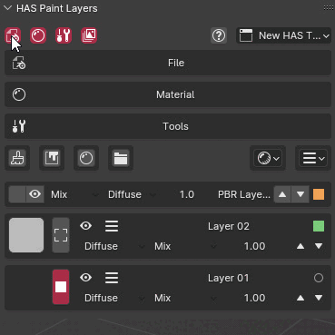
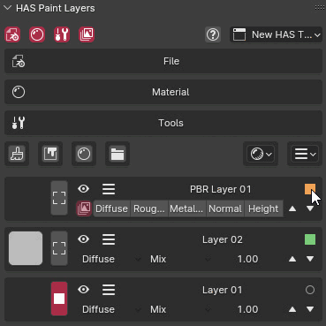

Customization
Tabs
Buttons located in the top-left corner of the panel allow you to enable or disable specific panels that you may not use.

Layer Customization

Each layer has a button in the top-right corner that can be used to make the layer more compact, saving space in the interface. Additionally, each layer can be color-tagged to help with organization. There are eight different colors available, which can help you visually categorize layers by type or function.
To change a layer's color tag, go to the Layer Action menu and select the Color Option. This color-coding feature is especially useful for larger projects that involve multiple layers, as it helps quickly identify specific types of layers at a glance.
Keymap
HAS Paint comes with a few built-in shortcuts to enhance productivity:
-
Change Brush to Eraser and Reverse: Press E to toggle between brush and eraser modes.
-
Draw with Line: Hold W to draw straight lines.
To customize these shortcuts, go to the Addon Preferences and open the Shortcuts Panel.